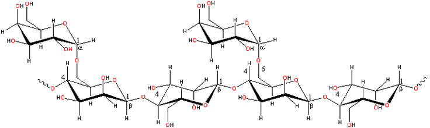

Guar plant,
by Tamil Nadu
Guar gum rapidly forms highly viscous solutions in cold water.
Guar gum (E412, also called guaran) [2079] is a reserve polysaccharide (seed flour) extracted from the seed of the leguminous shrub Cyamopsis tetragonoloba, where it acts as a food and water store.
Guar gum is a galactomannan a similar to locust bean gum consisting of
a (1 4)-linked β-D-mannopyranose
backbone with branch points from their 6-positions linked to α-D-galactose
(that is, 1
4)-linked β-D-mannopyranose
backbone with branch points from their 6-positions linked to α-D-galactose
(that is, 1 6-linked-α-D-galactopyranose).
There are between 1.5 - 2 mannose residues for every galactose residue.
6-linked-α-D-galactopyranose).
There are between 1.5 - 2 mannose residues for every galactose residue.
Guar gum structure

[Back to Top  ]
]
Guar gum is made up of non-ionic polydisperse rod-shaped polymers
consisting of molecules (longer than found in locust
bean gum) made up of about 10,000 residues. Higher galactose
substitution also increases the stiffness (that is, decreases
the flexibility) but reduces the overall extensibility and radius
of gyration of the isolated chains [291].
The galactose residues prevent strong chain interactions as few
unsubstituted clear areas have the minimum number (about 6) required
for the formation of junction zones. Of the different possible galactose
substitution patterns, the extremes of block substitution and alternating
substitution give rise to the stiffer, with a greater radius of gyration,
and most flexible conformations respectively (random substitution
being intermediate) [291]. Its persistence length is greater than that for locust bean gum at about 10 nm [1378]. If the galactose
residues were perfectly randomized, it unlikely that molecules would
have more than one such area capable of acting as a junction zone,
so disallowing gel formation. A block substitution pattern, for
which there is some experimental evidence [322],
would allow junction zone formation if the blocks were of sufficient
length. Use of endo-1,4-β-D-mannanase and α-D-galactosidase have shown that shorter chain lengths and lower degrees of substitution lead to the formation of large, but soluble, assemblies while longer galactomannans have reduced solubility [1749]. Enzymatic hydrolysis of some of the galactose side chains
may allow guar gum to be used to replace a dwindling locust bean
gum supply. [Back to Top  ]
]
Guar gum is an economical thickener and stabilizer. It hydrates reasonably rapidly in cold water to give highly viscous pseudoplastic solutions of generally greater low-shear viscosity when compared with other hydrocolloids and much greater than that of locust bean gum. High concentrations (≈ 1%) are very thixotropic, but lower concentrations (≈ 0.3%) are far less so. Guar gum is more soluble than locust bean gum and a better emulsifier as it has more galactose branch points. Unlike locust bean gum, it does not form gels but does show good stability to freeze-thaw cycles. Guar gum exhibits high low-shear viscosity but is strongly shear-thinning. Being non-ionic, it is not affected by ionic strength or pH but will degrade at pH extremes at higher temperatures (for example, pH 3 at 50 °C). It shows viscosity synergy with xanthan gum. With casein, it becomes slightly thixotropic forming a biphasic system containing casein micelles.
Guar gum retards ice crystal growth non-specifically by slowing mass transfer across the solid/liquid interface. Guar gum is useful in the food, cosmetics, explosive, textile and oil industries [3640].
Unfortunately for the food industry, guar gum has been found to be ideal for use by the oil and gas industry to extract gas and oil from source rocks using pressurized fluid (hydraulic fracturing, or ‘fracking’). This has increased both the demand for guar and its price several-fold [1792].
Interactive structures are available (Jmol). [Back to Top  ]
]
a Another galactomannan with lower substitution (with a mannose to galactose ratio of about 3:1) is tara gum (E417), obtained from Cesalpinia spinosa. It has properties between those of guar gum and locust bean gum. Higher substituted galactomannans are found in fenugreek gum (Trigonella foenum-graecum) and mesquite gum (Prosopis juliflora), with mannose to galactose ratio of about 1:1 (but possibly as high as 5:4 [492]) and 5:4 respectively. The higher substitution of these gums gives them improved solubility, dispersiveness, and emulsification (although it appears that this emulsification activity is absent in the polysaccharide [492] but due to protein impurities [309]). [Back]
Home | Site Index | Hydrocolloids | Polysaccharide hydration | hydrogen-bonding | LSBU | Top
This page was established in 2002 and last updated by Martin Chaplin on 5 August, 2021